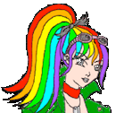

| 1 2 3 4 5 6 7 8 9 10 11 12 13 14 15 16 17 18 19 20 21 22 23 24 25 26 27 28 29 30 31 32 33 34 35 36 37 38 39 40 41 42 43 44 45 46 47 48 49 50 |
| 16:57:56 | LINK |  Linking the puzzle generator to the entrance in the process |
| 16:57:46 | MAP |  Tagged the entrance panel |
| 16:56:51 | STATUS |  Except for the big sign containing the sequence, all signs SHOULD work now (I hope) |
| 16:36:31 | LINK | Linking the stuff in the process |
| 16:36:24 | SCRIPT |  Worked this out in the clicking script |
| 16:32:05 | SCRIPT | Clickable clearer |
| 16:21:31 | NOTE |  ALl it does now is config stuff... Later it will be fully functional |
| 16:21:14 | SCRIPT | Clickable scripter |
| 16:15:50 | LUA |  IDE code refreshing |
| 16:15:02 | GITHUB |  Commit |
| 16:14:10 | LICENSE |  Up-to-date |
| 16:09:27 | WENDICKA | Some ideas came to mind in how to cover arrays and maps... This comes later though, but I think I got it ;) |
| 15:39:56 | GENERATION |  Set up a generation routine to generate the puzzle numbers |
| 15:32:56 | FAILURE |  Lagging time |
| 12:41:27 | SCENARIO |   Well "scenario" is a big word in a case like this, but the scenario editor was used for this.... I've set up a tag system that will make the signs in the puzzle show what they have to |
| 12:33:42 | CLOSED | |
| 12:17:21 | BLITZMAX |  And with the first piece of BlitzMax code was generated by Scyndi, and yeah, BlitzMax did succesfully compile it (although it does nothing yet, and it was purely a declaration filled with purecode, but hey, you gotta start somewhere) ;) ' Code generated by Scyndi
Strict
' Global Variables
' Translated functions
Function SCYNDI_PRG_SYSTEM_VOID_BLITZTEST ( SCYNDI_ARGUMENT_A:String )
Print SCYNDI_ARGUMENT_A
End Function
|
| 12:15:49 | SCYNDI |  Identifier substution for Scyndi's been done |
| 11:51:28 | MEME | |
| 01:09:29 | STATUS | I'm gonna call it a day, see ya! |
| 01:09:18 | NOTE | No configuration changes for the backup... good |
| 01:08:07 | STATUS | I do have some important "real life" stuff to take care of tomorrow, that will mean time is not my best friend... Anyway the planning is to make the game get priority for two reasons.... First of all, I want to 'divide' my time fairly, and second, on Saturday I got more time, and since the most complex part is yet to come I guess that's only a better way to go too.... |
| 00:58:56 | BACKUP |  Started up |
| 00:58:45 | GITHUB | All Crap pushed |
| 00:22:13 | SCYNDI | |
| 00:20:37 | TODO | |
| - = 12 Jul 2018 = - |
| 23:54:01 | NOTE | This will make the 'return' command also possibe, but since that requires expressions (unless you're dealing with procedures) that will come later |
| 23:52:52 | SCYNDI | Function ending set up |
| 23:31:34 | BUG |  HAHAHA.... arguments are not being named by the function declaration routine I see |
| 23:30:07 | SCYNDI | And now Scyndi should be able to properly convert this into Wendicka code |
| 23:20:28 | WENDICKA | Getting Wendicka/Wendicka#15 done may get top priority here, as Scyndi will need it pretty bad for variable disposal (for local variables), but for now this will have to do... |
| 23:18:02 | LICENSE | Up-to-date |
| 23:17:23 | TEST |  And the result I wanted to see has been returned |
| 23:16:50 | FIXED |  And that fixes that bug in the process |
| 23:16:44 | WENDICKA | SUM instruction added |
| 23:12:30 | BUG | that results in a rather odd error that requires investigation |
| 23:11:08 | TEST | Building the script with the Wendicka compiler appears no problem, but how will the execution go? |
| 23:09:45 | WENDICKA | Wrote a little test script I need for testing this. |
| 23:09:29 | WENDICKA | |
| 23:02:48 | WENDICKA | |
| 22:55:44 | SCYNDI | Working out on function header for Scyndi |
| 22:55:10 | GAMEJOLT |  MW Cleanup |
| 21:53:40 | NOTE | Yeah, that's where it's getting confusing, isn't it ;) |
| 21:53:26 | FIXED | Parse errors in parser |
| 21:52:29 | FIXED | parse errors |
| 20:54:06 | CONFIRMED |  Well, it appears to come together, but it's too early to cry victory yet... |
| 20:50:27 | SCYNDI | All that will happen is that a remark for the function blocks will be created in the translation, but hey, ya gotta start somewhere ;) |
| 20:49:19 | FAILURE | I just arrived at the international lag festival |
| 20:49:03 | GO |  Set up some base code for Scyndi function parsing |
| 20:42:33 | MEME | |
| 20:42:27 | SITE |  Added tag MEME |
| 20:41:11 | BUG | |
| - = 11 Jul 2018 = - |
| 23:04:41 | STATUS | And that's it for now, folks.... Catch ya later... |
| 22:59:45 | BACKUP | Running |
| 22:59:14 | CONFIG |  And there was a lot to reconfigure this time, I see XD |
| 22:57:37 | CONFIG | Backup configuration updated |
| 22:55:29 | SYSTEM |  Load of updates... Do I have them all now? |
| 22:54:22 | ALPHA |  Updated |
| 22:54:09 | GITHUB | Game pushed to github the way it's now |
| 22:52:15 | SCYNDI | A bit depending on the time, tomorrow will be a bit of my brainstorm session.... function calls, variable definitions, and as such translating expressions. The plan is to 'break down' the expression first and translate it later, well, sort of.... |
| 17:48:27 | NOTE | I really hope it'll work that way, as this is the hardest part (and also the reason my first attempt to create Scyndi failed) |
| 17:47:58 | SCYNDI | A bit of a datachain set up for expressions... |
| 17:35:52 | OFFTOPIC | |
| 15:58:02 | GO | Right recursing types is possible in Go, but only as long as they are pointers, but I was planning to use pointers anyway, so who f----g cares |
| 15:51:29 | TECHNO |   The translation of expressions is (of course) a bit dependent on the target platform. Also Pascal has a different way to check things than other languages, and that is not something Scyndi can help (unfortunately), so I guess working with ( and ) will be very important to all Scyndi programmers ;) |
| 15:49:03 | CONFIRMED | And that works the way it should |
| 15:48:54 | EXPERIMENT |  Checked a few ways in which Go should handle things |
| 15:43:49 | STUDY |  A few experiments are in order before starting on this |
| 15:41:46 | SCYNDI | Set up for the translation of function calls. |
| 15:38:39 | SCYNDI | Skeleton (or rather empty function) for expression translation. |
| 15:35:27 | FIXED | that |
| 15:33:45 | CONFIRMED | This works, except for one thing.... |
| 13:37:57 | TEST | Gotta test this, of course.... |
| 13:37:18 | SCRIPT | Auto removal of unneeded signs and buttons in CASUAL and EASY modes |
| 13:35:44 | NOTE | (No visual effect yet) |
| 13:35:37 | LINK | Buttons linked to their sings |
| 13:27:34 | LUA | IDE refresh |
| 13:26:58 | PLAN |  Now there are seven signs and respective buttons. They stand for the answer in multiple choice questions, now in the EASY mode there will be only 3 of those (so if you don't know 33% chance when you guess), in the CASUAL mode there are 5 if those (so if you don't know the answer 20% chance for a correct guess). In the HARD mode all 7 will be there (so a guess will then be 14% chance). |
| 13:16:20 | COSMETIC |  That was only a cosmetic bug... whoohooo! |
| 13:16:08 | FIXED | Map overlap issue |
| 13:15:38 | TEST | Yup, that appears to be in order.... |
| 13:10:31 | GITHUB | Pushed |
| 13:08:18 | TEST | So let's do it! |
| 13:07:42 | STATUS | I cannot test the puzzle itself yet (as it's not yet active and the generator hasn't even been properly linked yet), but I can take a look if the map loads properly and if Ryanna and Nino move through it accordingly. |
| 13:00:51 | MAP | Plates put in map |
| 12:43:09 | ART |  Pressure plate |
| 12:04:26 | NOTE | (Plus the generation script may yet have been written, but the solving script hasn't). |
| 12:04:07 | MAP | I've set up the room for layer 005, however I do still need to put in the buttons or switches to allow you to actually SOLVE the puzzle |
| 11:48:58 | MAP | Created layer 005 for the Caves of Starrow |
| - = 10 Jul 2018 = - |
| 21:16:59 | PLAN | |
| 19:03:51 | GO | At least everything compiles... :-/ |
| 18:55:52 | FIXED | Illegal function declaration |
| 17:55:06 | TEST | All I can test for now is the question if no Go parsing errors arise... What Scyndi does itself is still under-the-hood.... (that will change soon, hahaha)... ;) |
| 17:52:08 | SYSTEM | It appears I was a bit behind on my homebrew updates.... XD |
| 17:51:05 | NOTE | This will still NOT produce any readable code, but at least we do have something to get on the move ;) |
| 17:50:13 | SCYNDI | Function argument declaration parser |
| 17:32:29 | TODO | |
| 17:16:19 | STUDY | A little case confirmation check for Go |
| 15:56:19 | CONFIRMED | At least I could confirm the very very base data has been written the way it should (for what that was worth)... |
| 15:54:53 | NOTE | Although I must note that I have to keep my fingers crossed, as this is an "under-the-hood" operation, so there's still a lot that can go wrong when true output is being generated |
| 15:54:03 | SCYNDI | Well basically the import routine SHOULD work.... |
| 15:48:44 | FIXED | A few more things which are hard to explain |
| 15:47:53 | FIXED | Code typos |
| 15:34:00 | FIXED | Failed declaration |
| 15:33:05 | FIXED | Invalid type declaration |
| 15:29:51 | FIXED | Statement closure error |
| 15:28:26 | FIXED | Fixed it, though.... |
| 15:28:21 | STUPIDITY |  Geez, how did I come up with that one |
| 15:27:24 | FIXED | Declaration error in go |
| 15:26:24 | FIXED | Go definition parse error |
| 15:25:39 | NOTE | Errors are expected at this point, but I do need to test a few things out.... |
| 15:25:22 | LINK | Importer linked to parser |
| 15:05:33 | SCYNDI | Import parser done.... Not yet tested though.... |
| 14:46:45 | PLAN | |
| 14:04:04 | PLAN | |
| 13:49:13 | SCYNDI | A few security things put in |
| - = 09 Jul 2018 = - |
| 21:32:34 | NOTE | Now this can be funny (and spook up syntax highlighters for Scyndi if they are ever created). The identifier named can be anything, EVEN if it's a keyword in Scyndi. This way Import End Void Quit could be a valid instruction for Scyndi when translating to BliitzMax (where "End" just terminates the program immediately), although in Scyndi "END" is used to end statements (same as in Lua although it's "end" there). |
| 21:29:06 | SCYNDI | Quick word retriever set up |
| 21:23:02 | SCYNDI | Skeleton code set up for the import instruction. |
| 21:19:36 | NOTE | added |
| 21:16:29 | CLOSED | |
| 21:14:37 | TODO | |
| 20:44:15 | STUDY | I never really looked into the possibility to work with pointers in php (which it officially does not support), as php is one of the languages I want to support as targets for Scyndi... I never seriously looked into it (never needed it), so I had to study this :) |
| - = 08 Jul 2018 = - |
| 21:20:50 | OFFTOPIC | |
| 21:05:57 | STATUS | Time was not my friend today, and the stuff I need to do on both projects were too complex to even try thinking about doing today....More time is up my hand soon.... |
| - = 07 Jul 2018 = - |
| 23:32:25 | PLAN | |
| 23:30:08 | SCYNDI | Scyndi's readme updated |
| 23:29:38 | GITHUB | Pushed all stuff |
| 23:06:11 | CLOSED | |
| 23:06:04 | CLOSED | |
| 23:03:31 | TODO | |
| 21:33:46 | PLAN | |
| 17:52:19 | SCYNDI | The "USE" base code has been set up... |
| 17:13:14 | TODO | |
| 16:50:05 | PLAN | |
| 16:49:46 | CLOSED | |
| 15:28:45 | SCYNDI | A few things set up for BlitzMax Translation |
| 01:51:20 | STATUS | Time to call it a day... Bye! |
| 01:04:54 | GITHUB | All the crap's been pushed |
| 01:03:26 | UPDATED | |
| 01:02:39 | CLOSED | |
| 01:02:34 | CLOSED | |
| 01:02:21 | CLOSED | |
| 00:59:37 | UPDATED |  Credits |
| 00:58:35 | LICENSE | Since this is gonna be a large push let's fist make sure the license info is up-to-date |
| 00:57:39 | BACKUP | With that the TRUE backup for today will begin... |
| 00:55:50 | NOTE | So I guess Take XL (showing the first L) will not be needed anymore... |
| 00:55:26 | CONFIRMED | AT LAST!!!! ALL THAT HAD TO BE FIXED IS FIXED NOW!!!! |
| 00:13:39 | TEST | Take XXXIX (and that's the last take prior to the letter L... If this goes well, we don't see the L, and otherwise it's there).... |
| 00:12:27 | INVESTIGATION |  Aha... Just as i thought my dear Watson... A code typo... As "always" the solution was... OBVIOUS.... |
| 00:09:18 | ALPHA | Updated, but that's right now more as a kind of on-line backup.... A true update comes later.... |
| 00:08:53 | ANALYSIS | this data tells me NOTHING AT ALL, so this will be a nasty investigation... :-/ |
| 00:08:31 | DUMP | Compiling: Script/Data/CharAbility/DEMON_RYANNA_Lucifer.lua
Compiling: Script/Data/IAA/ABL_HERO_DEMON_RYANNA_LUCIFER_F1.lua
Compiling: Script/Data/IAA/ABL_HERO_DEMON_RYANNA_LUCIFER_F2.lua
Compiling: Script/Data/IAA/ABL_HERO_DEMON_RYANNA_LUCIFER_F3.lua
Compiling: Script/Data/IAA/ZPECIAL_REVERT.lua
Trying to load: GFX/Combat/Fighters/Hero/DEMON_RYANNA_Lucifer_Cast.png
Compiling: script/data/combat/ai/Default.lua
foeactions = {
[1] = "ACT_ATTACK",
[2] = "ACT_ATTACK",
[3] = "ACT_ATTACK",
[4] = "ACT_ATTACK",
[5] = "ACT_ATTACK",
[6] = "ACT_GUARD"
}
Compiling: script/data/combat/ai/Default.lua
foeactions = {
[1] = "ACT_ATTACK",
[2] = "ACT_ATTACK",
[3] = "ACT_ATTACK",
[4] = "ACT_ATTACK",
[5] = "ACT_ATTACK",
[6] = "ACT_GUARD"
}
>bye
|
| 00:07:17 | INVESTIGATION | Alright.... NOTHING HAPPENS AT ALL... That is quite odd.... |
| - = 06 Jul 2018 = - |
| 23:59:36 | NOTE | (two more takes before the letter L appears, sheesh).... |
| 23:59:19 | TEST | Take XXXVIII will (hopefully tell me). |
| 23:58:51 | STATUS | All I need to find out now is why manual restoring to human form doesn't work.... |
| 23:58:25 | CONFIRMED | AT LAST!!! |
| 23:48:26 | NOTE | At this rate we'll make it take M.... (I certainly hope NOT!) |
| 23:48:05 | TEST | Take XXXVII |
| 23:47:57 | FIXED | Fixed that |
| 23:47:50 | COCKROACH |  A CODE TYPO!!!!!!!!!!!!! |
| 23:46:40 | COCKROACH | OH DAMN! |
| 23:39:54 | TODO |  And while building I'm gonna put my rice in the boiler.... |
| 23:39:31 | TEST | Take XXXVI |
| 23:39:12 | EXPERIMENT | I hope this covers that one.... |
| 23:38:38 | COCKROACH | INFINITE LOOP! |
| 23:35:12 | DONE |  In the meantime my meat is spiced.... |
| 23:32:00 | TEST | Take XXXV |
| 23:31:49 | NOTE | I'll get to the manual restore issue later |
| 23:31:38 | FIXED | But it should fix that |
| 23:31:31 | SCRIPT | Dirty code |
| 23:29:19 | COCKROACH | and out-of-ap restore leads to another CRASH.... Oh crap! |
| 23:28:44 | BUG | Manual restore is ignored |
| 23:23:39 | CONFIG | Backup tool reconfigured.... |
| 23:22:58 | TEST | Take XXXIV |
| 23:22:53 | COCKROACH | Well, it's over now? PLEASE? |
| 23:22:43 | NOTE | SIIIIIIGH! |
| 23:22:12 | FIXED | Another nil bites the dust.... |
| 23:12:31 | TEST | Take XXXIII |
| 23:12:24 | NOTE | Yeah I barely DARE to use that word now.... :-/ |
| 23:12:12 | FIXED | Fixed????? |
| 23:11:49 | COCKROACH | Of course another nil has to make its way through.... I guess I MUST reach the L in the number.... :-/ |
| 23:08:43 | GITHUB | If this works now this will close #137 , #135 , #97 and #89 so that'll be quite a push |
| 23:08:03 | GITHUB | |
| 23:06:07 | NOTE | and due to this crap I haven't yet had dinner, so after this take I guess I'm gonna prepare my chicken... :-/ |
| 23:05:34 | BACKUP | Safety backup started.... I don't wanna lose this hard work today.... |
| 23:04:54 | NOTE | I fear the L in the take numbers is drawing closer... Only 8 more takes and we're there.... YIKES! |
| 23:04:37 | TEST | Take XXXII |
| 23:04:27 | EXPERIMENT | Let's try this |
| 23:03:03 | COCKROACH | I'm really growing tired of this now :-/ |
| 23:02:47 | COCKROACH | NIL |
| 22:57:05 | TEST | But take XXXI will have to confirm this... Let's go! |
| 22:56:42 | DONE | Tried to fix that |
| 22:55:36 | BUG | But it's not entirely over yet as the demon cards still appear and have to go... |
| 22:55:19 | FIXED | That does stop the error above |
| 22:49:55 | TEST | Take XXX |
| 22:49:36 | EXPERIMENT | Will this work? |
| 22:25:55 | HUH |  Okay, that only made matters worse..... :-S |
| 22:21:06 | TEST | Take XXIX |
| 1 2 3 4 5 6 7 8 9 10 11 12 13 14 15 16 17 18 19 20 21 22 23 24 25 26 27 28 29 30 31 32 33 34 35 36 37 38 39 40 41 42 43 44 45 46 47 48 49 50 |